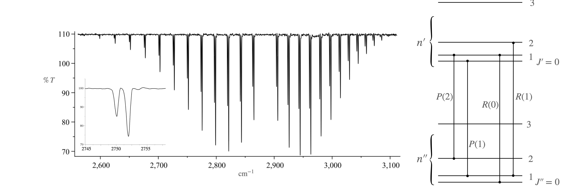

Questions 4 - 9¶
Q4 Slope and variance for a line¶
Calculate the equation for the slope and the variance for a weighted straight line fit through the origin.
Strategy: Generate, then solve, the normal equations for \(y = bx\). Use the error propagation equation to calculate the variance and use \(\sigma_i^2 = 1/w_i\) to simplify it.
Q5 Summation¶
Show that \(\displaystyle S_{xx}=\sum_{i=1}^n x_iw_i -\frac{\left(\sum_{i=1}^nx_iw_i\right)^2}{\sum_{i=1}^n w_i}\)
Q6 Error propagation¶
Starting with the error propagation formula calculate,
(a) the error in the slope equation 39; the slope is \(b = S_{xy} /S_{xx}\).
(b) the error in the intercept, \(a = \langle y\rangle - b\langle x\rangle\).
It helps to use \(S_{xy}=\sum_i w_i y_i(x_i-\langle x\rangle),\text{ and } S_{xx}=\sum_iw_i(x_i-\langle x\rangle)^2\).
Strategy: Differentiate with respect to \(y_i=1,2,3,\cdot\) which will produce a series of terms. Square these, multiply by the variance for each \(y_i\) which is \(1/w_i\) and finally sum. Equation 22 is the general error propagation equation.
Q7 Graphite lattice spacing¶
The following data were obtained in an experiment to determine the lattice spacing \(d\) in graphite by electron diffraction. The sine of the diffracted angle vs \(1/\sqrt{V}\) is given in the table where \(V\) is the acceleration voltage applied to the electrons. The equation describing the lattice spacing is \(\displaystyle d=\frac{h}{\sin(\theta)\sqrt{8emV}}\), see Q1. (\(e\) is the charge on the electron, \(m\) its mass and \(h\) is Planck’s constant.)
The \(x\) data is in volts\(^{-1/2}\cdot 10^4\) and \(y\) is \(\sin(\theta)\cdot 10^4\).
(a)\(\quad\) Calculate the slope and the intercept and test whether the data goes through zero or whether there is a systematic error in the measurement of the angle.
(b)\(\quad\) Calculate the lattice spacing.
Q8 Stern-Volmer & fluorescence quenching¶
The Stern-Volmer equation is used to analyse the quenching behaviour of electronically excited molecules S*. The equation is derived from a steady state analysis of the rate equations given in Chapter 10.1.5 and Q10.10 and is \(\varphi/\varphi_Q=1+k_{SV}[Q]\) where \(\varphi\) is the fluorescence yield in the absence of quenchers and \(\varphi_Q\) that with quencher concentration \([Q]\). The quenching constant is \(k_{SV} = k_Q\tau\) where \(k_Q\) is the second-order rate constant for the step \(S^*+Q\overset{k_Q}\to S+Q\) and \(\tau\) the excited state lifetime in the absence of quencher \(S^*\overset{1/\tau}\to S\).
(a) Use the following data, which has been measured from the quenching of quinine sulphate in acidic solution, and determine whether,within error, the intercept is \(1\).
The standard deviation on each yield is \(0.02\).
(b) Calculate the quenching rate constant if the excited state lifetime is \(18 \pm 1\) ns.
Q9 HCl Vibration - rotation spectrum¶
A molecule may undergo simultaneous vibrational and rotational transitions leading to a spectrum with a characteristic shape, figure 10. A photon has one unit of angular momentum and this has to be conserved on absorption or emission. A pure vibrational transition therefore does not occur in a molecule because vibrational transitions do not involve angular momentum but instead both the rotational and vibrational energy of the molecule changes. These transitions occur in the infrared part of the spectrum and the rotational transitions occur to smaller (P branch) and to larger frequency (R branch) than the energy of the missing \(n_{00}\) vibrational transition. Because the energies of vibrational and rotational transitions are very different, \(100 \to 1000\)’s cm\(^{-1}\) compared to \(0.01 \to 10\) cm\(^{-1}\) respectively, to a first approximation, the vibrational and rotational energies of molecules can be regarded as independent, and their energies add.
While it is clearly illogical to consider a vibrating molecule as a rigid rotator, it is, in fact, a good model because the period of a vibration is far shorter, \(\approx 10\) fs, than that of rotation \(\approx 1\) ps. Because of this, to a good approximation, the two types of motion are not coupled to one another and their energies can be added.
Normally, it is sufficient to consider a molecule to be a rigid rotator but to be vibrating anharmonically. In units of cm\(^{-1}\), the energy is
The selection rules are \(\Delta = \pm 1\) for the vibration and \(\Delta J = \pm 1\) for rotation, with the proviso that when \(J = 0, \Delta J = 1\). For a diatomic molecule because \(\Delta J = 0\) is not allowed when a photon is absorbed or emitted a change in vibrational energy is always accompanied by a change in rotational energy.

Figure 10. The HCL spectrum. The first two P and R branch transitions are shown on the right. Two vibrational levels are shown, each with a few of their rotational levels but not drawn to scale. The separation between vibrational levels should be far greater than shown. It is conventional to denote quantum number \(J\) in the upper vibrational state, i.e. higher value of \(n\), by a single prime i.e. as \(J'\) and in the lower vibrational state by double prime, \(J''\).
(a)\(\quad\) Split the spectrum into P and R branches and label with the quantum numbers. Explain the origin of the double lines for each transition. Lines arising from \(\Delta J = -1\) are called the P branch, the missing line corresponding to \(\Delta J = 0\) is called the Q branch, and lines arising from \(\Delta J = +1\) are called the R branch.
(b)\(\quad\) Explain why the line spacing is not constant across the spectrum.
(c)\(\quad\) Using the equation, calculate the energies, \(F(0, J'')\) and \(F(1, J')\).
(d)\(\quad\) Consider the fundamental band, i.e. the change \(n = 0 \to n = 1\) and calculate the transition frequencies \(v_{0,J''\to 1,J'}\) which, because wavenumbers are used, is the same as the difference in \(F(n, J)\) values.
(e)\(\quad\) Show that the spectrum is a set of equally spaced lines separated by \(2B\) either side of the spectrum’s origin at \(v_0 \equiv v_e(1 - 2x_e)\).
(f)\(\quad\) Centrifugal stretching of the bond may be neglected to a high degree of approximation but allowance must be made for the effect of vibration on the value of the rotational constant \(B\) because \(B\) depends on the moment of inertia of the molecule. This in turn depends on the internuclear distance, which becomes larger in an anharmonic oscillator as quantum number \(n\) increases. To a good approximation
where \(B_n\) is the value of \(B\) in the \(n^{th}\) vibrational level; \(B_e\) is the value of \(B\) at the minimum of potential energy, i.e. when the internuclear separation is \(r_e\), and \(\alpha_e\) is a constant which allows for the increased average internuclear separation as \(n\) increases.
Repeat the calculation in (c) with \(B_n\) instead of \(B\). For the R branch let \(J' = J'' + 1 \equiv J\), and for the P branch, \(J'' = J' + 1 \equiv J\). Show that the P and R transitions depend on \(J^2\).
(g)\(\quad\) Let \(J\) be equal to \(m=+1,+2,+3\cdots\) for the R branch, and \(-1,-2,-3\cdots\) for the P branch and calculate the difference \(v_m + v_{-m}\) by substituting \(m\) for \(-m\) and show that
(h)\(\quad\) Using the data below for H\(^{35}\)Cl, plot \(v_m + v_{-m}\) against \(m^2\), which should be a straight line with a slope \(-2\alpha_e\), and intercept \(2v_0 = 2v_e(1 - 2x_e)\) and find \(v_0\) and \(\alpha_e\) with their respective standard deviations and \(95\)% confidence limits. Use the value \(x_e = 0.0174\).
(i)\(\quad\) Repeat the calculation for H\(^{37}\)Cl and compare the two force constants using \(2\pi cv_e=\sqrt{k/\mu}\). Use the \(t\) statistic to compare the two mean values obtained and discuss whether the result can be believed. The data is shown in the table with frequencies in wavenumbers. The standard deviation on each value is \(0.08\;\mathrm{ cm^{-1}}\).